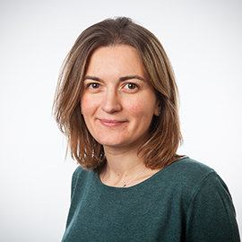
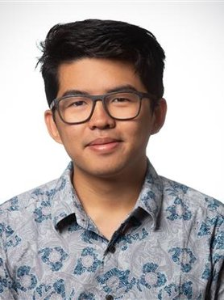
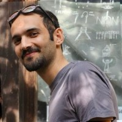
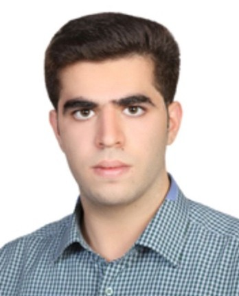

Our Team
Principal Investigator

Dr. Ir. Nazli Tumer
Principal Investigator
Delft University of Technology & Guest Scientific Researcher - Department of General Practice & Orthopedics and Sports Medicine, Erasmus MC
Research: Developmental Skeletal Biomechanics
PhD Students

E. Tay
PhD Candidate
Research: Data-Driven Modeling of Bone Growth

M. Homayounfar
PhD Candidate
Research: Data-Driven Modeling of Bone Growth

M. Mahmoodi Gahr
PhD Candidate
Research: Mechanistic Modeling of Bone Growth
Sabrina Hormann
PhD Candidate
Research: Personalized Musculoskeletal Modeling to estimate knee joint forces
Sara Nuvoli
PhD Candidate
Research: cartilage cellular responses to mechanical load and heterogeneity
Alumni
- Yujiang Peng, Engineering Vibrating Nanopatterns for Killing Bacteria, PostDoc 2021-2022.
- Liza de Wilde, Exploring depletion effects and binding dynamics in superselective DNA Nanostars, MSc 2023-2024.
- Ties Wolterbeek, Automatic detection and grading of osteophytes on knee magnetic resonance images using deep learning, MSc 2023-2024.
- Sofia Spinthaki, Assessment of bone microarchitecture with photon-counting detector computed tomography, MSc 2023-2024.
- Beatrice Gagliostri, Exploring mechanisms of intervertebral disc herniation in a range of in-vitro animal models, MSc 2023-2024.
- Sanne Cox, Optimal screw position for guided bone growth in slipped capital femoral epiphysis, MSc 2023-2024.
- Rimke Beinema, Development of a finite element model of the achilles tendon: evaluating local displacement estimation, MSc 2023-2024.
- Huib Achten, Design of an instrumented hip implant and its performance evaluation, MSc 2022-2023.
- Rui Neves de Liva, Design of a patient-specific lunate implant and its performance evaluation, MSc 2022-2023.
- Casper Donkevoort, Studying the effects of hip rotations on a 2D statistical shape model of the hip joint, MSc 2022-2023.
- Thanasis Argyropoulos, Design of an instrumented hand brace and its performance evaluation, MSc 2022 – 2023.
- Maaike Talsma, Computational modelling of the knee to study initiation and progression of osteoarthritis after anterior cruciate ligament reconstruction, MSc 2022 – 2023.
- Afaq Khan, Design of a mandibular implant with gradient materials, MSc 2022 – 2023.
- Vera Ederveen, Automated alpha angle computation for the quantitative evaluation of CAM morphology, MSc 2022 – 2023.
- Jet Molenaar, The development of a computational workflow for the semi-automated construction of patient-specific finite element models of tibial fracture fixation, MSc 2022 – 2023.
- David Wildoer, Sensitivity of a coupled modelling workflow to knee marker displacement, MSc 2022 – 2023.
- Nagme Renkli, 3D printed patient-specific surgical guide with a lateral hinge protecting K-wire and a soft tissue protecting sleeve for open wedge high tibial osteotomy: a pilot study, MSc 2022 – 2023.
- Hugo van Duijnhoven, Biomechanical loading behavior of a knee joint distraction device as treatment for osteoarthrosis, MSc 2022 – 2023.
- Wilrik Creeze, Development of a motion guidance device for 4D CT scans of the wrist, MSc 2021- 2022.
- Aurora Tjernshaugen, Human Mesenchymal stem cell behaviour on meso-scale substrate curvature: a finite element analysis of the effects of substrate curvature on cellular traction forces and morphology, MSc 2021-2022.
- Anastasis Alexopoulos, Early detection of knee osteoarthritis using deep learning-based MRI features, MSc 2021-2022.
- Riis Kaak, Static strength analysis of a novel custom triflange acetabular component by experimental testing and finite element modelling, MSc 2021-2022.
- Daniel Donse, A deep learning approach to (semi-) automatically track bone movement in ultrasound images of patients with a unilateral transtibial prosthesis, MSc 2021-2022.
- Marike Fokker, Development of crumpled-based meta-biomaterials as bone filling substitutes, MSc 2021-2022.
- Arthur van Kootwijk, Development of a workflow for designing patient-specific mandibular reconstruction implants and predicting their performance through experimentally validated finite element models, MSc 2020-2021.
- Niek Rutten, Effect of different femur shapes on the development of cam-type deformities, MSc 2020-2021.
- Miriam Oldhoff, Design and optimisation of an additively manufactured patient-specific partial mandible reconstruction implant, MSc 2019-2020.